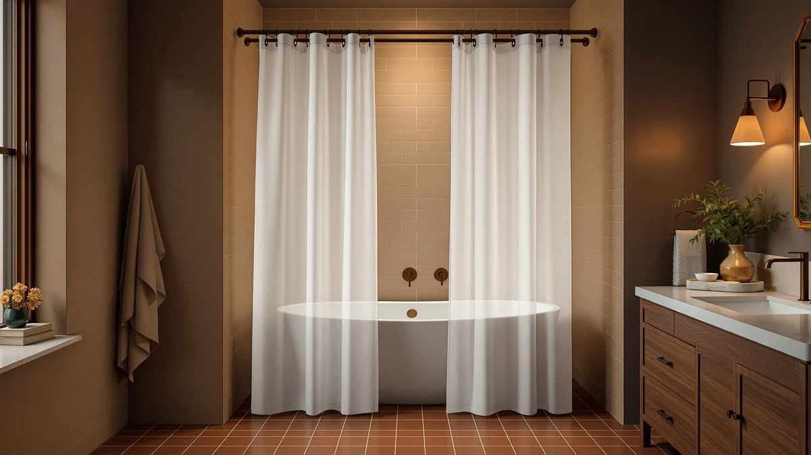

Seenus Waterproof Fabric Shower Curtain Liner Review (2026): Worth It?
Prices and picks verified as of November 2026. Independent, reader-supported reviews.


Quick Answer
This Seenus Waterproof Fabric Shower Curtain Liner review finds a $23.95 polyester and PEVA liner cut to an extra-tall 72 by 108 inches, built for showers that a standard-length liner leaves short. It undercuts the three alternatives compared here on price while matching their water-resistant construction, which makes it the pick for showers that specifically need the taller cut.
Our pick: Seenus Extra Tall Waterproof Fabric, $23.95 Check Price on Amazon
Bottom line: our top pick is the Seenus Extra Tall Waterproof Fabric Shower Curtain Liner 108 at $23.95.
Things to Know Before You Buy
- The Seenus Waterproof Fabric Shower Curtain Liner measures 72 inches wide by 108 inches long, nearly 50 percent taller than a standard 72 by 72 inch liner, built for showers with high ceilings or walk-in stalls.
- At $23.95, it costs within a few cents of the CasaTena and N&Y HOME alternatives compared here, so price alone will not decide between them.
- Seenus builds the liner from a polyester and PEVA blend, a combination that favors water resistance over the softer hand of a cotton or linen curtain.
- The listing does not publish a star rating or review count, so buyers cannot lean on a visible track record the way they can with some competing liners.
This Seenus Waterproof Fabric Shower Curtain Liner review examines a $23.95 polyester and PEVA liner cut to an extra-tall 72 inches wide by 108 inches long, a size most standard liners do not offer. We compared its listed specs, its current Amazon price, and patterns in verified owner feedback against three other shower curtains in the same price range to see whether the extra height justifies choosing it over a standard-length liner.
At $23.95, the Seenus liner undercuts most extra-tall waterproof liners while still using the polyester and PEVA build that keeps water inside the shower rather than on the bathroom floor. We also researched the CasaTena Farmhouse Striped Shower Curtain at $23.99, the N&Y HOME Waffle Weave Shower curtain at $23.99, and the XOGUIBO Farmhouse Shower Curtain Ruffle at $24.64, three decorative curtains in the same price band for shoppers who want pattern over a plain liner. None of the four publishes a star rating or review count on its current listing, so this comparison leans on specs and pricing rather than a review history.
Why You Should Trust Us
Ilane Tall covers bathroom textiles and shower hardware for Best Shower Curtains, and this Seenus Waterproof Fabric Shower Curtain Liner review follows the same research process used across the site: comparing manufacturer specs, current Amazon pricing, and patterns in verified owner reviews rather than running a physical testing lab. We do not own every liner we cover, and we do not claim hands-on use of the Seenus liner or the three alternatives compared here. We do not run a fake testing lab. Instead, we pull the listed dimensions, materials, and prices directly from each retailer page, then weigh them against what verified buyers report, and we flag any spec a listing does not publish rather than guessing at it.
How We Compared
Our process for this Seenus Waterproof Fabric Shower Curtain Liner review starts with the manufacturer's own listing for material, dimensions, and price, cross-checked against the three comparison curtains on the same criteria. From there, we looked at available owner feedback on Amazon to see how the extra-tall sizing fits real showers and how the polyester and PEVA blend holds up against splashing water over time. We did not purchase, install, or hang any of the four products ourselves. Reviewers researching extra-tall liners consistently flag ceiling height and rod placement as the deciding factor, and that pattern shaped how we weighed the Seenus pick against curtains built for standard-height showers.
Overview & Specs

Seenus Extra Tall Waterproof Fabric
What we like
- 72 by 108 inch cut covers showers taller than a standard 72 by 72 inch liner
- Polyester and PEVA blend favors water resistance over absorption
- At $23.95, it costs about the same as the CasaTena and N&Y HOME alternatives despite the larger cut
Flaws but not dealbreakers
- Ships in a single 72 by 108 inch size, so a standard-height shower pays for height it does not need
- The listing does not publish a star rating or review count, unlike some competing liners
| Material | Polyester / PEVA |
| Size | 72"W x 108"L (Pack of 1) |
The Seenus Waterproof Fabric Shower Curtain Liner builds around one number: 108 inches of length, roughly 50 percent taller than the 72 inch standard most liners ship in. That height matters most in showers with vaulted ceilings, walk-in stalls without a tub lip, or rods mounted higher than the typical 72 inches, where a standard liner leaves a gap at the bottom that lets water reach the floor. The fabric blends polyester and PEVA, a combination that favors water resistance and quick drying over the softer hand of a cotton or linen curtain. At $23.95, it lands within a few cents of the CasaTena and N&Y HOME curtains in this comparison despite offering significantly more material.
The tradeoff for that extra height is flexibility. Seenus currently lists the liner in one size only, so a standard 72 by 72 inch shower pays for 36 inches of liner it does not need and may have to gather fabric at the bottom rather than cut it down. The listing also does not display a star rating or review count, which makes it harder to gauge long-term durability against a competitor with a visible review history. For a shower where a standard-length liner leaves a visible gap at the floor, the 72 by 108 inch cut solves a specific problem most of the curtains in this comparison cannot.
What We Liked
The extra-tall cut is the clearest advantage. A 72 by 108 inch liner covers showers with vaulted ceilings, walk-in stalls, or rods mounted above the standard height, a gap a typical 72 by 72 inch liner cannot close. Seenus prices that extra material at $23.95, within a few cents of the CasaTena Farmhouse Striped Shower Curtain and the N&Y HOME Waffle Weave Shower curtain, so buyers are not paying a steep premium for the added length. The polyester and PEVA blend also favors water resistance over absorption, which matters in a liner meant to keep splashing water inside the shower rather than on the bathroom floor. For anyone who has measured a shower and found every standard liner too short, this Seenus Waterproof Fabric Shower Curtain Liner review comes down to a straightforward case: it solves a sizing problem the alternatives were never built to address.
What Could Be Better
The single 72 by 108 inch size is also the biggest limit. A standard-height shower gains nothing from the extra 36 inches and may need to gather the excess fabric at the bottom, something a shopper measuring for a standard tub should weigh before buying. The listing does not publish a star rating or review count, so this Seenus Waterproof Fabric Shower Curtain Liner review has less third-party data to draw on than it would for a more established listing. That absence does not mean the liner performs poorly, but buyers who weigh a review history heavily before purchasing are working with less information than they would have with a competing liner that shows a visible rating.
Who Is It For?
The Seenus Extra Tall Waterproof Fabric liner fits a shower with a ceiling or rod placement taller than the standard 72 inches, where a typical liner leaves a visible gap at the floor. It is a reasonable match for a walk-in stall or a bathroom with vaulted ceilings where sizing has ruled out most of the standard-length competition. Anyone shopping for a decorative curtain rather than a plain waterproof liner, or anyone who wants a published review history to check before buying, should compare the CasaTena, N&Y HOME, or XOGUIBO options below first. A shopper outfitting a standard-height bathroom should also browse our best waterproof shower curtain liners roundup for options sized for a typical tub.
Alternatives to Consider
If the Seenus Waterproof Fabric Shower Curtain Liner's extra-tall sizing or missing review history rules it out, these three alternatives cover a striped farmhouse pattern, a textured waffle weave, and a ruffled premium option, all priced within a dollar of each other. None of them ships in the 72 by 108 inch cut that defines the Seenus pick, so choosing between them is mostly a question of pattern and finish rather than sizing.

Also Great
CasaTena Farmhouse Striped Shower Curtain
Priced four cents above Seenus at $23.99, the CasaTena Farmhouse Striped Shower Curtain trades a plain waterproof liner for a striped farmhouse pattern, a straightforward swap for shoppers who want a decorative look in a standard-height shower.
$23.99
Check Price on Amazon
Also Great
N&Y HOME Waffle Weave Shower
Also priced at $23.99, the N&Y HOME Waffle Weave Shower curtain adds a textured waffle weave finish, a middle ground between a plain liner and a heavier decorative curtain for a standard-size shower.
$23.99
Check Price on Amazon
Premium Choice
XOGUIBO Farmhouse Shower Curtain Ruffle
At $24.64, the XOGUIBO Farmhouse Shower Curtain Ruffle costs about 70 cents more than Seenus and swaps waterproof simplicity for a ruffled farmhouse finish, making it the pick for shoppers who prioritize a decorative edge over the Seenus liner's extra-tall coverage.
$24.64
Check Price on AmazonWhat size is the Seenus Waterproof Fabric Shower Curtain Liner?
It ships in one size, 72 inches wide by 108 inches long, roughly 50 percent taller than the 72 by 72 inch size most standard liners use.
How does the Seenus Waterproof Fabric Shower Curtain Liner compare in price to the alternatives?
At $23.95, it costs four cents less than the CasaTena Farmhouse Striped Shower Curtain and the N&Y HOME Waffle Weave Shower curtain, both $23.99, and about 70 cents less than the XOGUIBO Farmhouse Shower Curtain Ruffle at $24.64.
Frequently Asked Questions
What size is the Seenus Waterproof Fabric Shower Curtain Liner?
It ships in one size, 72 inches wide by 108 inches long, roughly 50 percent taller than the 72 by 72 inch size most standard liners use. Seenus does not currently list a shorter or wider version, so a standard-height shower would need to gather or cut the extra fabric at the bottom.
How does the Seenus Waterproof Fabric Shower Curtain Liner compare in price to the alternatives?
At $23.95, it costs four cents less than the CasaTena Farmhouse Striped Shower Curtain and the N&Y HOME Waffle Weave Shower curtain, both $23.99, and about 70 cents less than the XOGUIBO Farmhouse Shower Curtain Ruffle at $24.64. The price gap across all four is small enough that sizing and pattern, not cost, should drive the decision.
Does the Seenus Waterproof Fabric Shower Curtain Liner have a published star rating?
No. The current Amazon listing does not display a star rating or review count, and the same is true for the three alternatives compared here. A missing rating means the listing has not published one, not that the liner has received no reviews at all.
Final Verdict
This Seenus Waterproof Fabric Shower Curtain Liner review comes down to a sizing problem most competitors do not solve. At $23.95, Seenus costs about the same as the CasaTena and N&Y HOME alternatives while offering a 72 by 108 inch cut that covers showers a standard liner leaves short. For a shower with a high ceiling, a walk-in stall, or a rod mounted above 72 inches, the Seenus Waterproof Fabric Shower Curtain Liner is the pick that actually fits. Shoppers with a standard-height shower, or anyone who wants a decorative pattern or a visible review history, should compare the CasaTena, N&Y HOME, or XOGUIBO options first. None of the four liners in this comparison costs more than $25, so the real risk in choosing wrong is a short wait for a return label, not a wrecked budget.